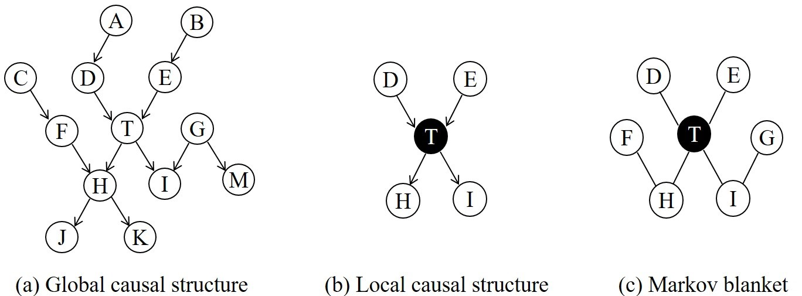
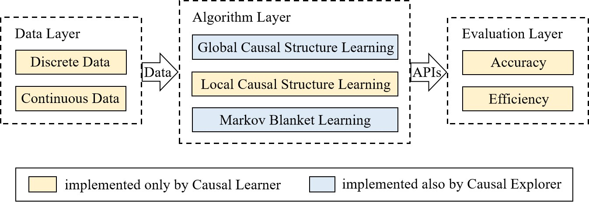
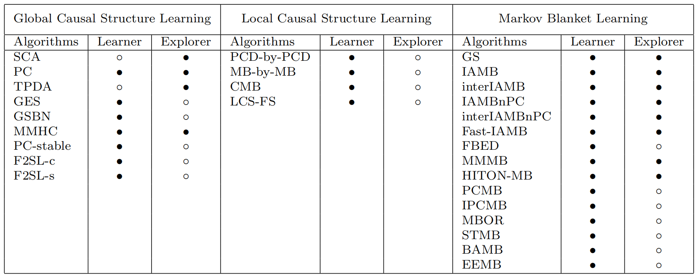

Causal Learner: A Toolbox for Causal Structure and Markov Blanket Learning
Written by Zhaolong Ling and Kui Yu.
Click here to download the latest stable release of Causal Learner.
Click here to download the latest stable release of Causal Learner.
Overview
Causal Learner
is a toolbox for learning causal structure and Markov blanket (MB)
from data. It integrates functions for generating simulated Bayesian
network (BN) data, a set of state-of-the-art global causal structure
learning algorithms, a set of state-of-the-art local causal
structure learning algorithms, a set of state-of-the-art MB learning
algorithms, and functions for evaluating algorithms. Figure 1 gives
examples of a global causal structure, local causal structure, and
MB (T in black is a target node). The data generation part of Causal
Learner is written in R, and the rest of Causal Learner is written
in MATLAB. Causal Learner aims to provide researchers and
practitioners with an open-source platform for causal learning from
data and for the development and evaluation of new causal learning
algorithms.

Figure 1: Examples of a global causal structure, local causal structure, and Markov blanket.
Architecture
Figure 2 shows the hierarchical architecture of Causal Learner, in
comparison with
Causal Explorer. As Causal Explorer represents the state-of-the-art ten years ago,
it does not contain many new algorithms, and it does not have a data
generation or evaluation component. By contrast, Causal Learner
conceives a more ambitious blueprint. It aims to support the entire
causal structure and MB learning procedure, including data
generation, state-of-the-art algorithms, and algorithm evaluation.

Figure 2: The architecture of Causal Learner.
Data
In the data layer, Causal Learner generates two types of data:
discrete data and continuous data. The data are generated based on
various benchmark BNs (written in R), and the details of each BN are
shown in Table 1. The data can also be generated by the
bnlearn
toolbox, but the generated data are encapsulated in R language
classes and cannot be easily used by researchers using other
programming languages. Causal Learner can output the generated data
as text for easy and flexible use.

Table 1: Benchmark Bayesian networks.
Algorithm
In the algorithm layer, Causal Learner implements 7 global causal
structure learning algorithms, 4 local causal structure learning
algorithms, and 15 MB learning algorithms (written in MATLAB). Table
2 lists all of these algorithms. To ensure the correctness of the
algorithms implemented in Causal Learner, unless the original
implementations of the algorithms are not released, we always try to
integrate the original versions rather than re-implement them.
Additionally, we have used the same data to evaluate the algorithms
in Causal Learner. Compared with Causal Explorer, the results of
Causal Learner are comparable in accuracy and much more efficient.

Table 2: Algorithms included in (indicated by •) and absent from (indicated by ◦) Causal Learner and Causal Explorer.
Evaluation
In the evaluation layer, Causal Learner provides abundant metrics
for evaluating causal structure and MB learning algorithms (written
in MATLAB). In terms of accuracy, global and local causal structure
learning algorithms are evaluated using the same 7 metrics: Ar_F1
(Ar denotes arrow), Ar_precision, Ar_recall, SHD, Miss, Extra, and
Reverse. MB learning algorithms are evaluated using 3 metrics:
Adj_F1 (Adj denotes adjacent), Adj_precision, and Adj_recall. In
terms of efficiency, global causal structure learning algorithms are
evaluated using running time, while both local causal structure and
MB learning algorithms are evaluated using running time and the
number of conditional independence tests.
Usage Example
Causal Learner comes with a
manual
that details the BNs, algorithms, evaluation metrics, and how
each function is used. Figure 3 shows an example of global
causal structure learning using Causal Learner. As shown in the
figure, Causal Learner needs only 4 input parameters when
learning a global causal structure, while Causal Explorer
requires additional parameters such as “domain count”. Thus,
Causal Learner uses a cleaner input format than that of Causal
Explorer.

Figure 3: An example of using Causal Learner to learn a global causal structure.